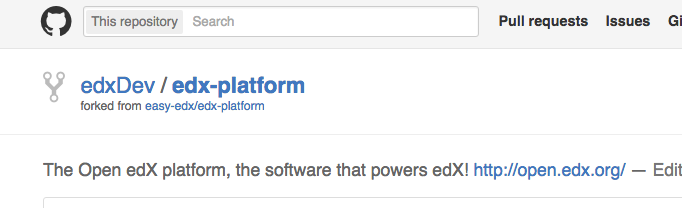

目的
这篇文章将以一个真实的案例，演示如何基于github，展开社区协作。
案例为:在社区版中集成youkuXblock
开发环境（社区版edx_cypress_docker）
开发环境的安装和使用,可以参考我此前的文章：
ps:使用devstack开发的同学，大体协作流程是相同的，仅是最初进入到开发环境的入口不同
fork社区版的源码
登录你的github账户，fork社区版的源码:easy-edx/edx-platform
fork完之后，你得到一个自己的镜像。好比我的演示用户为edxDev（用户名），那么我将得到： 
workflow
下边我们就进入了正式开发流程
克隆自己的源码镜像
git clone -b edx_cn/cypress_cn https://github.com/edxDev/edx-platform.git
建立自己的功能分支
分支命名：规则为
cd edx-platform
git checkout -b edxDev/youkuXblock edx_cn/cypress_cn
这样你就建立了基于edx_cn/cypress_cn（社区版）的分支了
开始开发
将开发环境跑起来
sudo docker run -itd -p 5000:5000 -p 5010:5010 -p 2022:22 -v ~/edx-platform:/edx/app/edxapp/edx-platform-dev wwj718/edx_cypress_docker:1.21
注：当前edx_cypress_docker最新的社区版为1.21（感谢edustack贡献的完整语言包！）
进入开发环境，做开发
使用ssh或是docker exec进入开发环境
在/edx/app/edxapp/edx-platform-dev/edx_cn_feature中添加新特性（采用脚本式的安装）。至于如何修改比较自由，原则是尽量不要侵入源码，而采取增量式的改变
在/edx/app/edxapp/edx-platform-dev/edx_cn_feature目录下增加youkuXblock_install.sh,内容为
/edx/app/edxapp/venvs/edxapp/bin/pip install git+https://github.com/wwj718/youkuXBlock.git
sed '/"FEATURES": {/a\ "ALLOW_ALL_ADVANCED_COMPONENTS": true,' -i /edx/app/edxapp/cms.env.json
#sudo /edx/bin/supervisorctl restart edxapp:
chmod +x /edx/app/edxapp/edx-platform-dev/edx_cn_feature/youkuXblock_install.sh
之后执行./youkuXblock_install.sh，特性添加完毕
调试后发现一切正常，就可以提交代码到社区啦
提交修改
在docker里的话，先做好git user配置
git config --global user.email "xxx@qq.com"
git config --global user.name "edxDev"
用git提交代码
cd /edx/app/edxapp/edx-platform-dev
git add /edx/app/edxapp/edx-platform-dev/edx_cn_feature/youkuXblock_install.sh
git commit -m 'add youkuXblock_install.sh to use youku in edx'
git push origin edxDev/youkuXblock:edxDev/youkuXblock
在github上发起pull requests（请求合并到社区）
最后提交就行啦